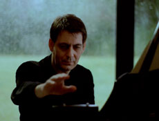

|
TWO TIMES 4’33’’
Manon de Boer | Belgien 2008 | 10 Min.
Format: 35mm
Originalsprache: without dialogues
Kamera: Sébastien Koeppel
Sound: Aline Blondiau
Editing: Julien Sigalas
Musik: 4'33" by John Cage
Mit Jean-Luc Fafchamps (Klavier)
Produktion: Auguste Orts, 5. Berlin Biennale
www.augusteorts.be
Silence, silencio. Die Aufführung von John Cages 4'33'' wird zur meditativen Untersuchung über die Erfahrung von Klang, Stille und Kino. Der Pianist Jean-Luc Fafchamps spielte John Cages 4'33'' zweimal vor einem Publikum im Studioraum des P.A.R.T.S. (The Performing Arts Research and Training Studios) in Brüssel. Einmal filmt De Boer in einer einzigen Einstellung die Ausführung der "stummen" Komposition inklusive der drei Interpunktionen, die Cage in seiner einfachen Partitur mit 1'40'', 2'23'' und 30'' angibt, und die vom still-vertieften Fafchamps interpretiert werden, indem er die Zeituhr berührt. Synchron dazu hört man den ambient sound der Umgebung.
Der zweite Teil des Films mit einer zweiten Aufführung von 4'33'' ist stumm bis auf das Klicken der Zeituhr bei 1'40'' und 2'23'' und 30''. Die Kamera vollzieht einen langen Schwenk, der bei Fafchamps beginnt, am Publikum vorbeiführt, und schließlich nach außen gelangt, in eine Provinzlandschaft am Stadtrand, die nur durch Telefonleitungen unterbrochen und vom Blätterwerk der Büsche belebt ist.
(Monika Szewczyk)
Manon de Boer, geb. 1966 in Kodaicanal/Indien. Studium an der Akademie der Bildenden Künste in Rotterdam und an der Reichsakademie der Bildenden Künste in Amsterdam. Sie lebt und arbeitet in Brüssel. Sie macht Filme, Videos, Installationen und unterrichtet an der Kunstakademie KASK in Gent. Sie gehört der Produktions- und Distributionsgemeinschaft Auguste Orts an.
Filme (Auswahl): Attica 2008 (UNDERDOX 03) | Two Times 4'33" 2008 | Villes Saisies 2007 | Presto, Perfect Sound 2006 | Resonanting Surfaces 2005 (UNDERDOX 01) | Sylvia Kristel – Paris 2003 (UNDERDOX 01) | Recalling Names and Places 1999 | Laurien 1996
Ausstellungen (Auswahl): Frankfurter Kunstverein 2008 | Witte de With, Rotterdam 2008 | Artists in Focus, Vaila do Cone, Portugal 2005 | Resonating Surfaces, Galerie Jan Mot, Brussels 2005 | Sylvia Kristel, Jan Mot 2003 | Laurien, SKOR, Amsterdam 2002
Gruppenausstellungen (Auswahl): Berlin Biennale 2008 | 52. Biennale von Venedig 2007 | 38. Art Basel, Jan Mot 2008 | Don Quijotte, Witte de With, Rotterdam 2006 | Thomas Kratz, Goethe Institut, Casablanca 2006 Documentary Creations, Kunstmuseum, Luzern 200
zurück
|